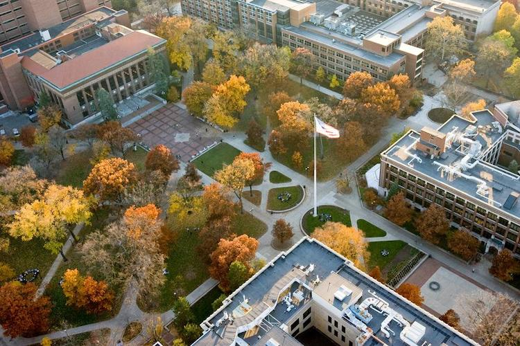
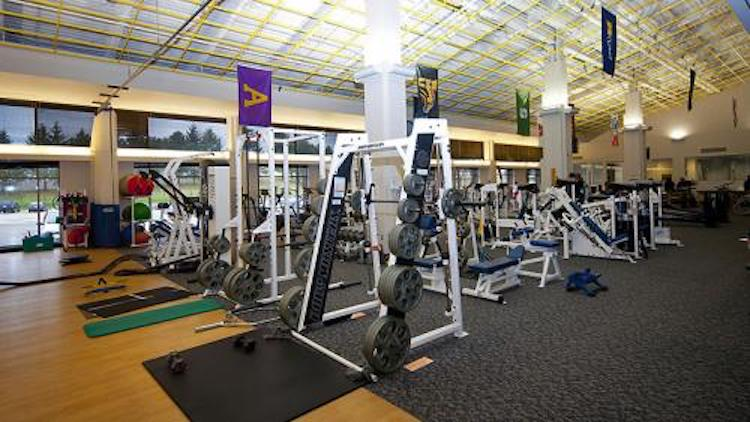
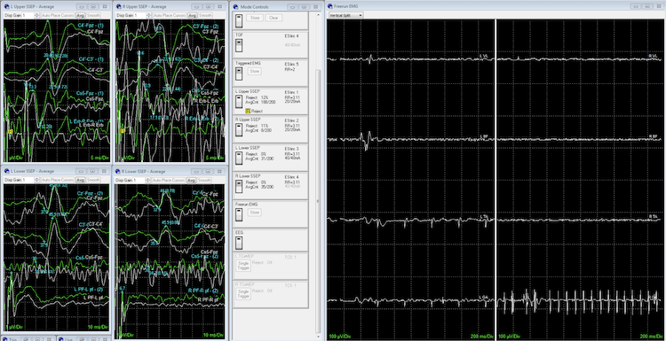
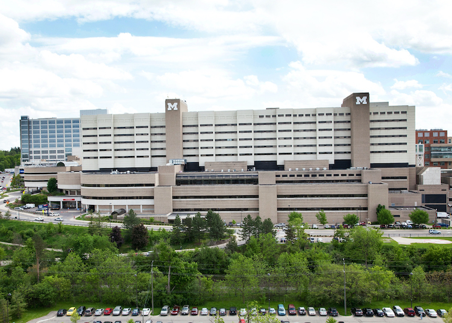
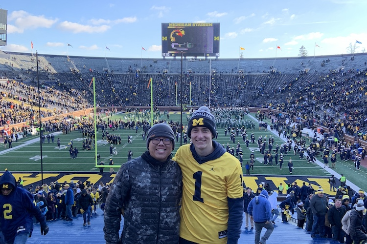
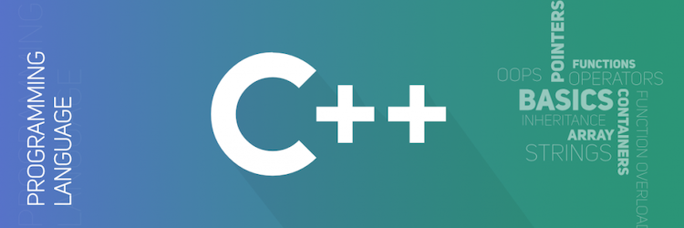
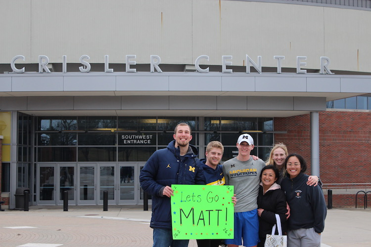
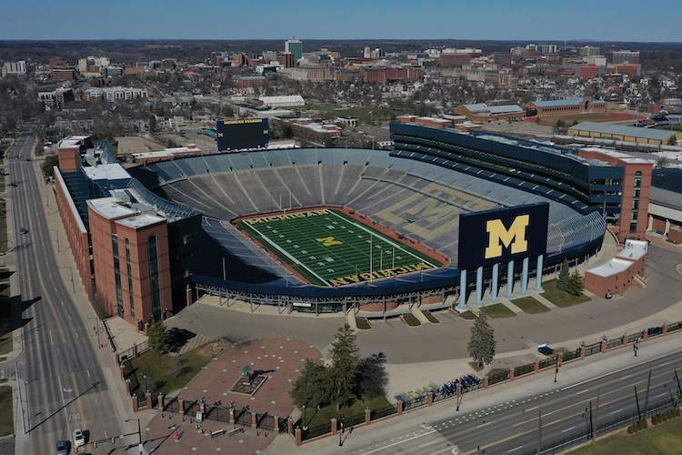
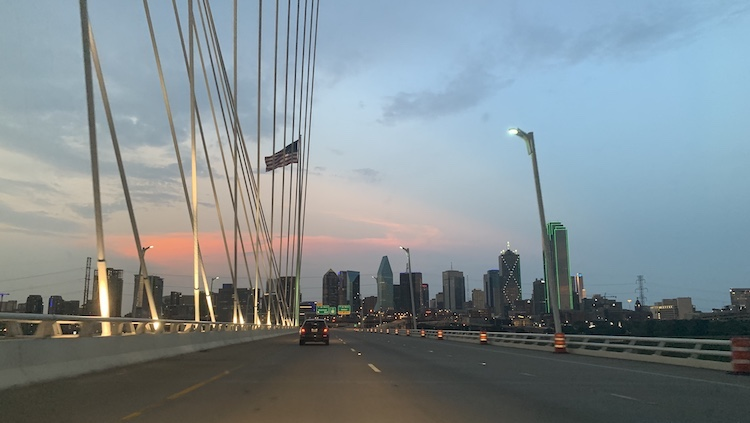

September 2016
In September, 2016 I begain attending the University of Michigan. I began taking the prerequisites necissary to attend to medical school while applying to be apart of the Movement Science major through the School of Kinesiology.
August 2017
In a tubing accident I tore my ACL, medial/lateral gastrocnemius, and a portion of the anterior tibial artery. For the next year I was in physical therapy several days per week perparing for surgery/recoving from surgery with the goal of returning to exercise again.
September 2018
After a rigorous application process I was chosen to be included in the school's intraoperative neuromonitoring program. This program focused heavily on neuroanatomy and types of neurosurguries with the goal of preparing us to work in teh operating room during neurosurgeries.
May 2019
Over the summer of 2019 I worked at the U of M hospital 3 days per week for my clinical rotations. These rotations involved working with established neuromonisotists in the U of M hospital to gain hands on experience. The goal of a neuromonitorist is to monitor the nervous system during invasive neurosurgeries with the goal of preventing or controling potential damage. These rotations taught us the hands-on skills along with the theoretical background to assist during neurosurgery.
September 2019
The opportunity to work in surgery over the summer was the opportunity of a lifetime that I am very thankful for, yet it taught me that the clinical setting is not for me. The uncertainty of the hours, the stressfulness of the workplace, and the lack of problem solving made me realize I needed to try to change directions with my last year in college. So I began to branch out in classes my senior year in college to help me find a new path.
January 2020
One of the classes I enrolled in was an introductory computer programming course in C++. I had done a little bit of introductory work through Codeacacademy before, but never anything this structured or in depth. In the first month of the class I was hooked. The prevelance of problem solving combined with the ability to write programs to solve real world problems was amazing too me. I continued to work hard within the class and outside of it to learn all that I could.
March 2020
In March I was signed up to run the Ann Arbor Marathon as my first marathon. I had trained hard all winter, yet due to COVID-19 the event was canceled. However, with the help of friends and family I was able to run it on my own and finish infront of the Crisler Center (one of my favorite places). This was finally my big comeback from my boating accident.
May 2020
In May I graduated from the Unviersity of Michigan. While my degree was still in movement science, I had found a passion in computer science that I had found in nothing else. Looking forward I sought to teach myself the skills necissary to transisiton into a career as a software develouper.
July 2020
In July I made the move down to Dallas, TX with my close friends from college and my girlfriend. Still studying computer programming and attempting projects on my own, I was excited about the job opportunities a big city would present and to experience a city outside of my home state of Michigan.
August 2020
I decided to join Coding Temple to accelerate my learning as a develouper. I have the energy and the passion to put work into my learning, but I want the direction that the Coding Temple offers to make sure I am headed in the right direction. I also want the small learning setting where I can really engage with the material and learn through projects. I am eager to start my career as a software devleouper and I know that Coding Temple can help me get there.